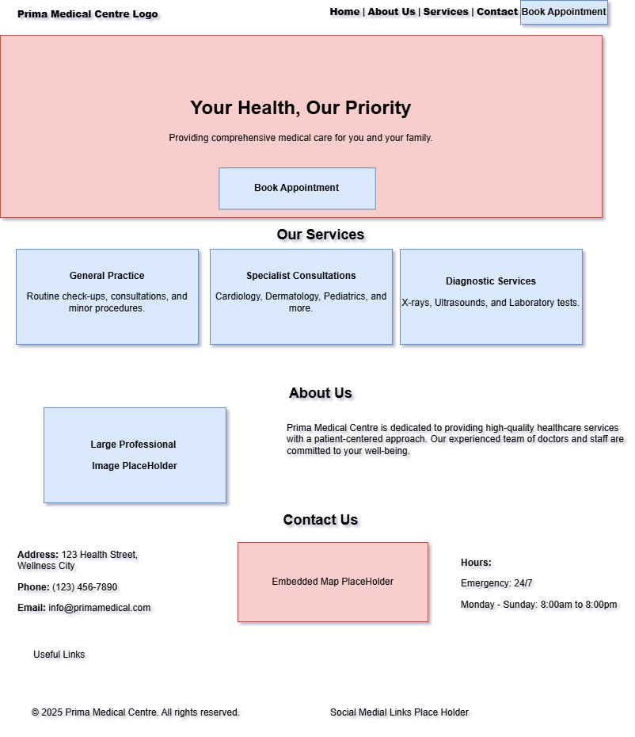

Site Name
Prima Medical Centre – A healthcare hub providing quality medical services and patient support.
Optional domain: primamedicalcentre.com
Site Purpose
The website provides information about Prima Medical Centre services, allows patients to book appointments, access health resources, contact medical staff, and stay updated on healthcare programs.
Scenarios
- How can I book an appointment with a physician or specialist?
- What health services are available for my condition?
- How do I contact Prima Medical Centre for insurance claims or inquiries?
Color Schema
- #004080 – Primary color for headings and navigation bar (trust, professionalism)
- #00A8E8 – Accent color for buttons, links, and highlights
- #F0F4F8 – Background color for main content and cards
Typography
- Roboto – Body text for readability and clarity
- Montserrat – Headings (h1, h2, h3) for a modern professional look
- Open Sans – Footer and secondary sections for contrast
Wireframe
Wireframes representing the homepage layout:


Mobile view shows a single-column layout for easy navigation. Desktop view displays multiple sections: header, appointment booking, services, and footer.